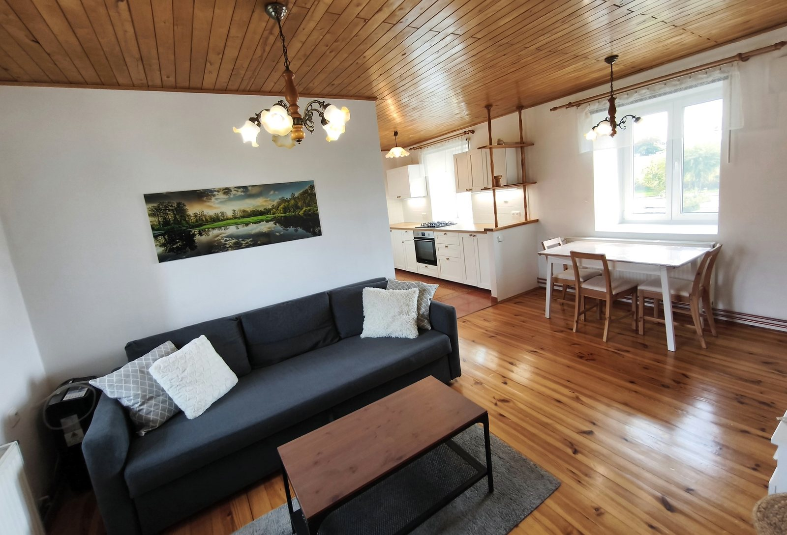
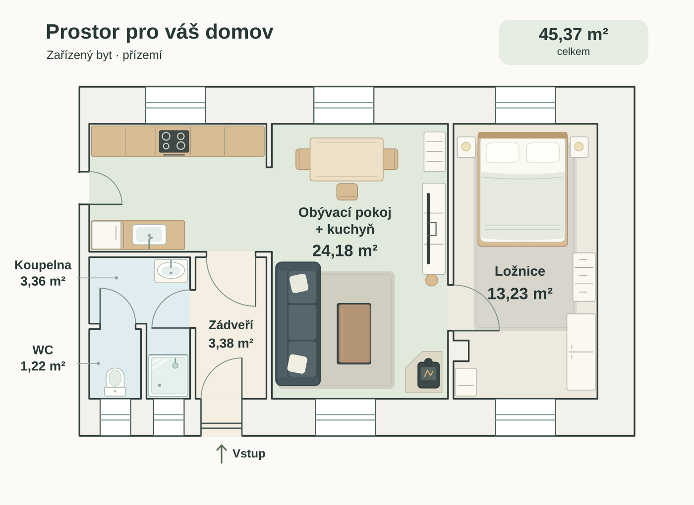
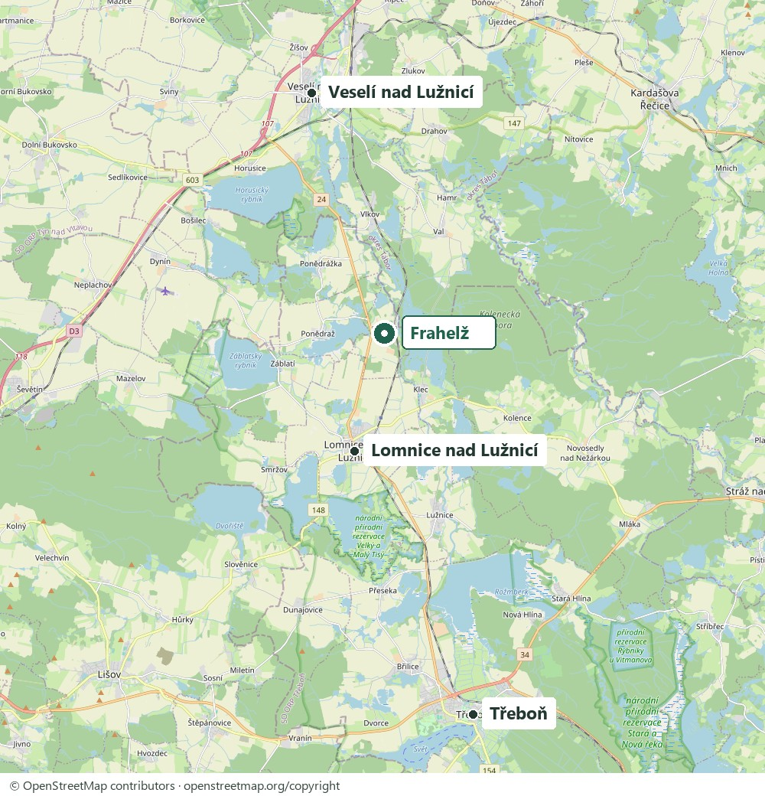
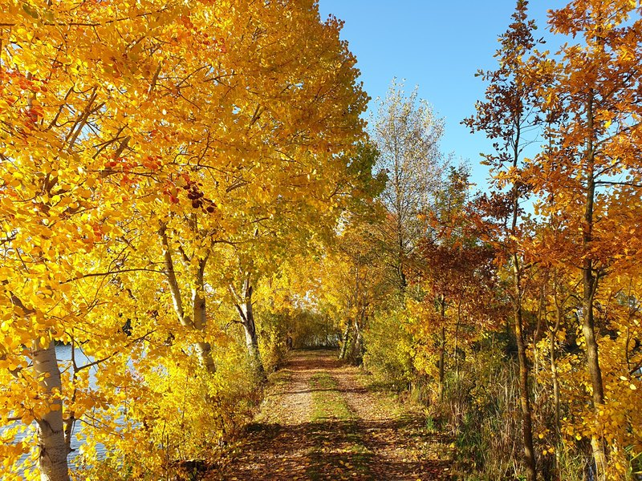
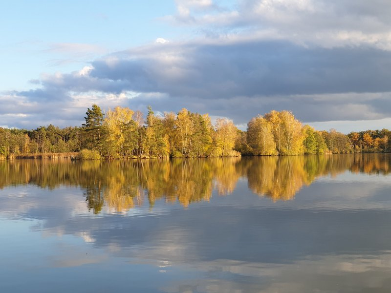
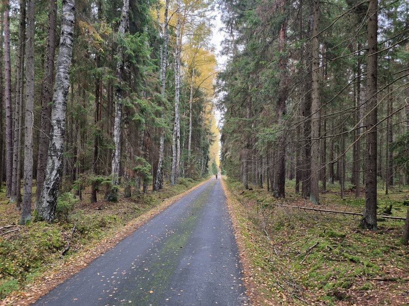
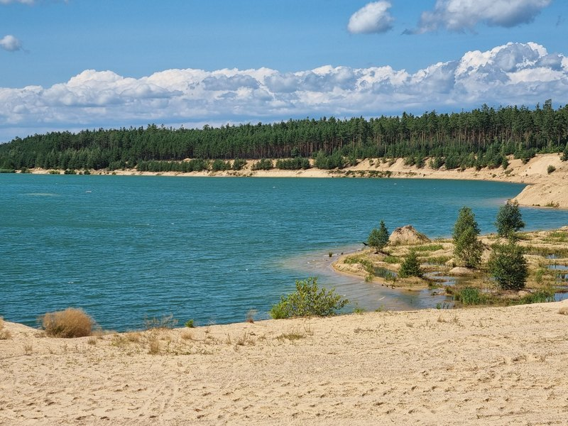

DLOUHODOBÝ PRONÁJEM · FRAHELŽ
Pronájem bytu 2+kk ve Frahelži.
Dlouhodobé bydlení pro 1–2 osoby. Zařízený samostatný byt se společným dvorem a parkováním až pro dvě vozidla.

Obývací pokoj s kuchyníPROSTOR PRO KAŽDÝ DEN
Vlastní prostor. Vše potřebné.
Samostatný byt v části domu ve Frahelži. Obývací prostor s kuchyní, oddělená ložnice a vlastní zázemí.
Byt se pronajímá zařízený. Kuchyň zahrnuje lednici, plynový sporák, troubu a mikrovlnnou troubu.
Rozkládací gauč umožňuje příležitostné přespání dalších dvou osob. Dlouhodobý pronájem je určený pro 1–2 osoby.
Termín nastěhování si potvrdíme při domluvě. Zvíře pouze po domluvě.
FOTOGALERIE
Prohlédněte si byt.
Klepnutím fotografii zvětšíte.
{kind=link}
{kind=link}
{kind=link}
{kind=link}
{kind=link}
{kind=link}
{kind=link}
{kind=link}
{kind=link}
EXTERIÉR
Dům a společný dvůr.
Vybrané záběry z dronu.
{kind=link}
{kind=link}
DISPOZICE A PLOCHA
Jak je byt uspořádaný.
Byt 2+kk s plochou 45,37 m². Kuchyně je součástí obývacího prostoru.
| Místnost | Plocha |
|---|---|
| Obývací pokoj + kuchyň | 24,18 m² |
| Ložnice | 13,23 m² |
| Zádveří | 3,38 m² |
| Koupelna | 3,36 m² |
| WC | 1,22 m² |
| Celkem | 45,37 m² |

Zvětšit plánekCENA PRONÁJMU
11 000 Kč měsíčně. Včetně paušálu.
Nájem a jeden měsíční paušál za energie, vodné, stočné a internet.
Zvíře pouze po domluvě. Dostupnost upřesníme telefonicky.
MĚSÍČNÍ PLATBY
- Nájemné
- 10 000 Kč
- Paušální platbaEnergie, vodné, stočné a internet
- 1 000 Kč
- Celkem měsíčně
- 11 000 Kč
Kauce: 20 000 Kč (dva měsíční nájmy bez paušálu).
Zavolat a domluvit prohlídkuTADY NÁS NAJDETE
Frahelž a okolí.
Mezi Třeboní, Lomnicí nad Lužnicí a Veselím nad Lužnicí.
Malebná vesnička mezi rybníky. Dům leží na klidném místě v blízkosti krásné přírody, ideální pro procházky, běhání i projížďky na kole.
Autobus: cca 100 m, 2 min pěšky. Vlak: cca 600 m, 9 min pěšky.
Z místní vlakové zastávky jezdí vlaky směrem na Veselí nad Lužnicí a na opačnou stranu směrem na Třeboň. Autobusové spojení je také do Třeboně.
Přijeďte se podívat osobně. Termín prohlídky si prosím domluvte předem telefonicky.
Zobrazit adresu na Mapy.com{kind=link}

MALÝ POHLED DO OKOLÍ
Rybníky a cesty v okolí.
Frahelž je malebná vesnička v krajině Třeboňska, kde se rybníky střídají s loukami, lesy a cestami po hrázích. Okolí láká k procházkám u vody, rannímu běhání i pohodovým výletům na kole. Můžete vyrazit na krátkou procházku po práci nebo strávit venku celé volné odpoledne.
Při poznávání okolí stojí za návštěvu Nadějská rybniční soustava s rybníky Víra, Naděje a Láska. Cyklistické výlety můžete směřovat přes Klec a Lužnici až k Rožmberku. Dalším cílem jsou pískovny v okolí a klidná místa u vody, kde si můžete odpočinout od každodenního shonu.
{kind=link}

{kind=link}

{kind=link}

{kind=link}

KONTAKT
Domluvte si prohlídku.
Adresa: Frahelž 12
Zavolejte pro více informací a volný termín.
703 982 014 Telefon pro zájemce o pronájem